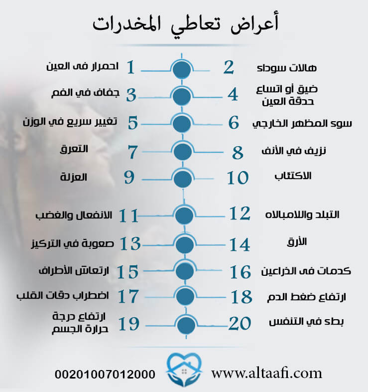

إدمان المخدرات، ويُسمى أيضًا اضطراب استخدام المواد، مرض يؤثر على مخ الشخص وسلوكه ويؤدي إلى العجز عن التحكم في استخدام العقار أو الدواء القانوني أو غير القانوني. كما تُعتبر مواد مثل الكحول والماريجوانا والنيكوتين من المخدرات. عندما تكون مدمنًا، قد تستمر في تعاطي المخدرات على الرغم من الأذى التي تسببه.
يمكن أن يبدأ إدمان المخدرات بالتعاطي التجريبي لمخدر على سبيل التسلية في مواقف خاصة ومن أجل بعض الناس، ويصبح تعاطي المخدرات أكثر تكرارًا. بالنسبة إلى آخرين ـ وخاصة مع المواد الأفيونية ـ يبدأ إدمان المخدرات بالتعرف على أدوية بوصفة طبية أو الحصول على أدوية من صديق أو قريب تم وصف الدواء له طبيًا.
يختلف خطر الإدمان وسرعة تحولك لمدمن على حسب العقار. تنطوي بعض العقاقير مثل المسكنات الأفيونية على خطر اعلى وتتسبب في الإدمان بسرعة أكبر من غيرها.
مع مرور الوقت، قد تحتاج إلى جرعات أكبر من العقار لتصل إلى النشوة. وسرعان ما تحتاج إلى العقار لمجرد أن تشعر بأنك في حالة جيدة. مع زيادة استخدامك للعقار، قد تجد صعوبة متزايدة في الاستمرار بدون العقار. قد تؤدي محاولات التوقف عن استخدام العقار إلى إحساس قوي بالرغبة فيه وتجعلك مريضًا بدنيًا (أعراض الانسحاب).
قد تحتاج إلى مساعدة من طبيبك وأسرتك وأصدقائك أو مجموعات الدعم أو برنامج علاجي منظم للتغلب على إدمانك للعقار والاستمرار بدون عقار.
اعتمادا على المُركب الفعلي، تعاطي المخدرات بما فيها الكحول تؤدي إلى مشاكل صحية أو مشاكل اجتماعية أو الاعتلال أو الإصابات أو الاغتصاب أو العنف أو وفيات أو حوادث السيارات أو القتل أو الانتحار أو الاعتماد البدني أو الإدمان النفسي . هناك ارتفاع في معدل الانتحار بين مدمني الكحول ومتعاطي المخدرات الأخرى، يُعتقد أن الأسباب التي تتسبب في زيادة خطر الانتحار يتضمن سوء الاستخدام طويل المدى للكحول والمخدرات الأخرى والتي تتسبب في تشويه الفسيولوجية لكيمياء الدماغ فضلاً عن العزلة الإجتماعية وثمّة عامل آخر هو من آثار التسمم الحاد في الأدوية قد جعل الانتحار أكثر من المحتمل أن يحدث. الانتحار هو أيضا شائعٌ جدا بين المراهقين مدمني الكحول، مع 1 من كل 4 حالات الانتحار لدى المراهقين تتعلق بتعاطي الكحول، وفي الولايات المتحدة الأمريكية إرتبط 30 في المئة من حالات الانتحار إلى تعاطي الكحول، كما يرتبط تعاطي الكحول مع زيادة مخاطر ارتكاب جرائم جنائية من بينها الإعتداء على الأطفال والعنف المنزلي والاغتصاب والسطو والاعتداء
لتقي نفسك من الإدمان على تعاطي المخدرات الضّارة عليك أن تحرص على مرافقة الأصدقاء الجيدين الذين يتمتعون بأخلاقٍ حسنة، وأن تبتعد عن كل الأصدقاء الذين يُحرضوك على تعاطي المخدرات أو ممارسة أي نوع من العادات الضّارة والخاطئة.
من الطبيعي أن يتعرض الإنسان للعديد من ضغوط الحياة اليوميّة التي لا تنتهي، وهنا يجب عليك أن تتعامل مع هذهِ الضغوط بحكمةٍ وباتباع طرق صحيحة لكي تتخلّص منها ومن تأثيراتها السلبيّة عليك كأن تمارس التمارين الرياضيّة، تمارين التنفس والاسترخاء، مطالعة الكتب العملية والروايات الأدبية، والتطوع في مجال عمل الخير والأعمال الإنسانيّة.
لتحمي نفسك ولتحمي أسرتك من التعرض لإدمان أي نوع من المخدرات الضّارة عليك أن تواظب على تثقيف نفسك وتثقيفهم عن طريق حضور المنتديات العلميّة والبرامج التثقيفيّة التي تحذر من أضرار المخدرات وتداعياتها على الصحة النفسيّة والجسديّة.
يجب عليك أن تراقب أفراد أسرتك وتطلع على مختلف الأماكن التي يذهبون إليها، بالإضافة لمراقبة الأصدقاء الذين يُرافقونهم، مع الحرص على وضع مجموعة من الضوابط والقواعد التي يجب أن يلتزم بها جميع أفراد الأسرة، مع عدم المبالغة في المراقبة وذلك لكي لا يشعروا بأنهم مُقيدون.
لكي تتجنب مشكلة تعاطي المخدرات والإدمان عليها، عليك أن تقضي على كل أوقات الفراغ التي تجعلك تُفكر بأمورٍ خاطئة، لهذا ننصحك بأن تواظب على ممارسة الهوايات المفضلة بشكلٍ يومي أو إسبوعي، كما وننصحك بأن تشجع نفسك على تعلّم بعض الهوايات الجديدة التي لم يسبق لك أن مارستها.
يلعب الغذاء الصحي دوراً فعّالاً في تنشيط عقل الإنسان وزرعه بالإيجابيّة التي تجعله يبتعد عن عوامل اليأس الذي قد يدفعه إلى الإدمان على العادات الخاطئة بما فيها إدمان المخدرات، لهذا عليك أن تواظب على تناول الغذاء الصحي كالمكسرات بأنواعها المختلفة، الفاكهة، الخضار الطبيعيّة، الحليب، البيض، والتمر.
تساعد الرياضة على تنشيط الجسم والعقل وعلى تحسين الصحة النفسيّة للإنسان، ومن هنا ننصحك بأن تواظب على ممارسة التمارين الرياضيّة اليوميّة في الهواء الطلق كالمشي، وركوب الدراجات.